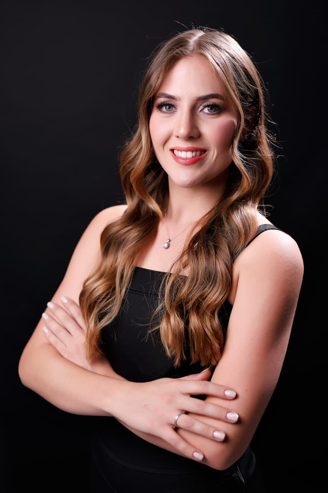

Transforme sua relação com a alimentação através de um acompanhamento nutricional humanizado, sem extremismos e focado nos seus resultados.
Quero mudar meus hábitos
Sou nutricionista formada pela Universidade Federal do Paraná (UFPR). Acredito que a alimentação vai muito além dos nutrientes: ela envolve comportamento, rotina e prazer.
Minha missão é te ajudar a alcançar seus objetivos de saúde — seja emagrecimento, hipertrofia ou qualidade de vida — de forma leve e sustentável, traduzindo a ciência da nutrição para o seu dia a dia.
Análise detalhada da sua rotina, exames de sangue, histórico de saúde e avaliação da composição corporal.
Um cardápio feito exclusivamente para você, respeitando seus gostos, sua realidade financeira e sua rotina.
Estaremos juntos durante todo o processo. Ajustes no plano, suporte para dúvidas e foco na mudança de comportamento.